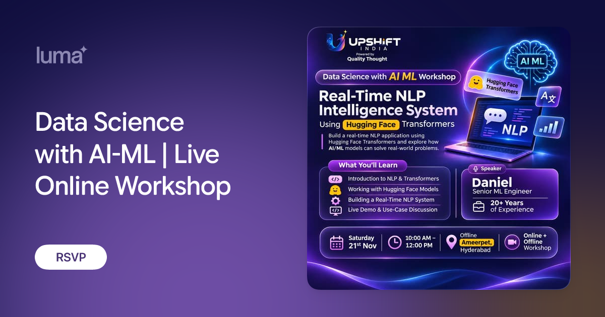

今日舉行
數據科學與 AI／機器學習線上工作坊（今日場）
Data Science with AI-ML | Live Online Workshop
兩小時免費線上入門工作坊，介紹數據科學與人工智能如何結合，包括資料分析、常見工具，以及行業應用與入行路徑，適合學生、新鮮人與想認識這門工作的聽眾。
官方明寫 Registration Fee: FREE。課堂示範或會提到業界工具，入場本身免費。與同日 14:00 女性短影音講座、Meetup「AI, Coffee & Life Hacks」頭部重疊，14:00 起請擇一。
官方連結 →